- App Store ★4.4（87件・2026年10月31日時点）
- 1万ダウンロード突破（2026年9月）
- Pocketと連携
勉強のための、ノートアプリ。
書く、覚える、たずねる、持ち歩く。
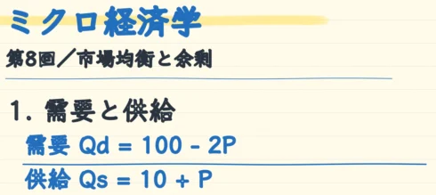
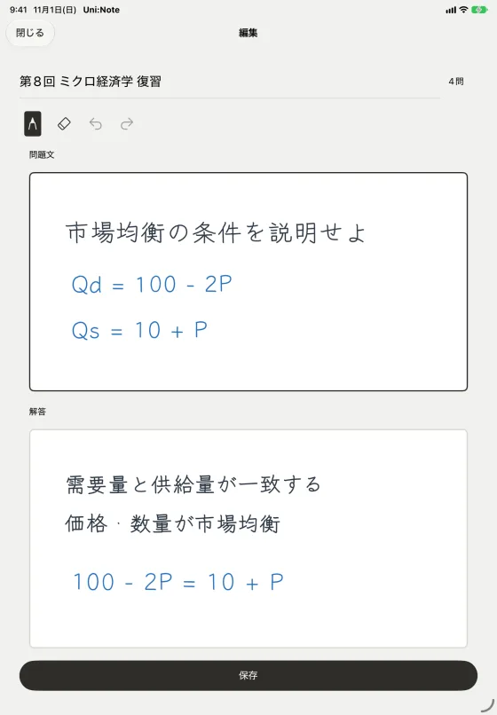
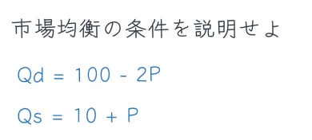


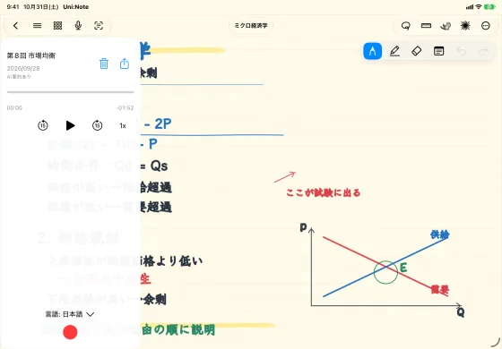
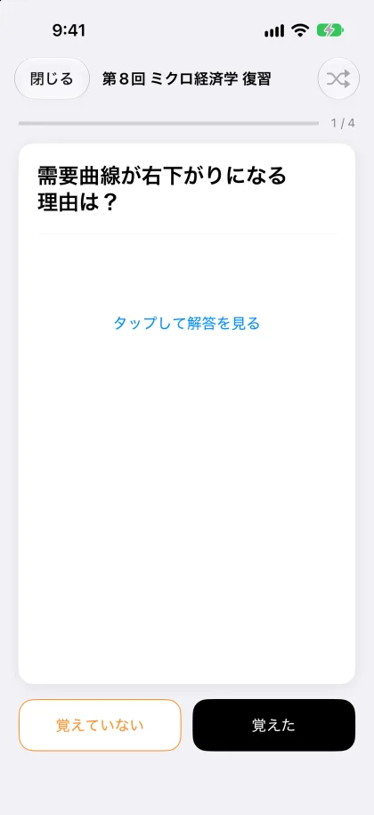
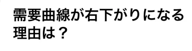
使い方は、自由自在。
紙のノートを選ぶように、Uni:Noteも自分好みに。
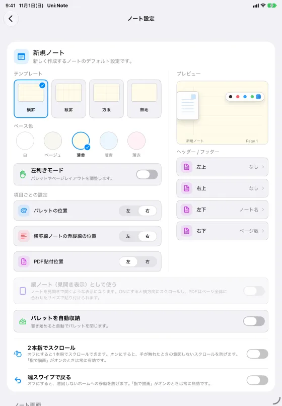
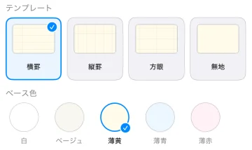
紙を選ぶ
罫線（横罫・縦罫・方眼・無地）と紙の色（薄黄・ベージュ・薄青・薄赤・白）を、ノートを作るときに選べる。
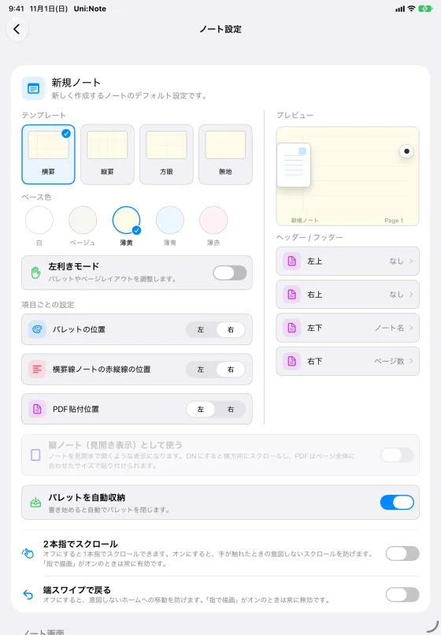
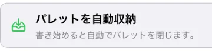
ペンとパレット
「パレットを自動収納」をオンにすると、書いている間はパレットが小さくなり、書くスペースが広がる。
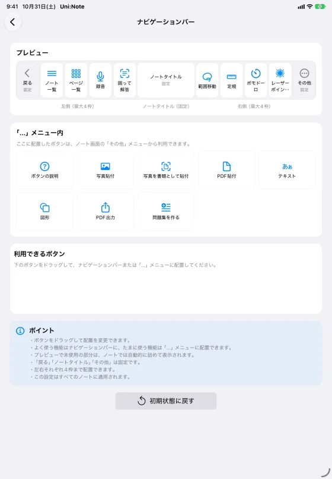
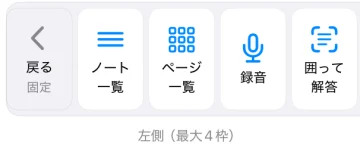
ナビゲーションバー
よく使うボタンを、左右4枠ずつ好きな位置に。
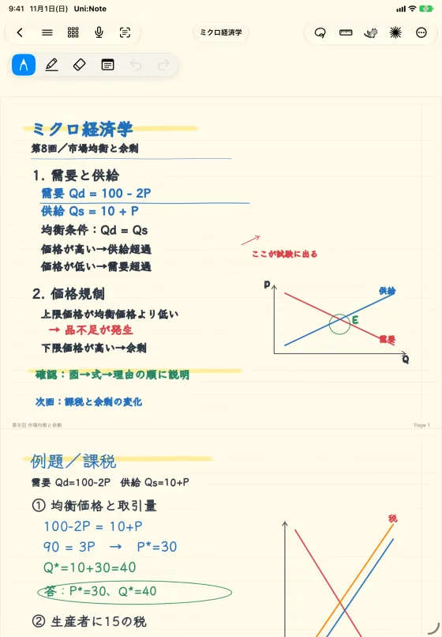
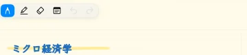
左利きモード
パレットの位置や、横罫の赤い縦線の位置を左右反転。

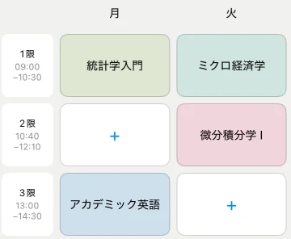
ホームの形
時間割・本棚・2ペインから。問題集や時間割をホームに出すかどうかも選べる。

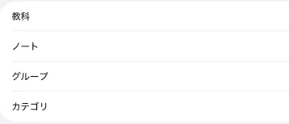
呼び方
本棚の項目を「教科」「ノート」「グループ」「カテゴリ」から。授業にも、仕事にも。
まずは、無料で。
最大60冊のノートまで無料。課金は、使い心地を確かめてからで大丈夫です。
Free
0円
教科10件まで、1教科につきノート6冊まで。手書き・PDF・問題集づくり・学習。
Premium
1,000円買い切り
教科・ノート無制限、かんたんバックアップ、録音、問題集の一括作成、毎月500 AI。
Premium Plus
350円／月
Premiumの全機能と、毎月10,000 AI。
ひとりの友人のために、作り始めました。
友人のちょっとした一言がきっかけで作り始めたノートアプリが、同じように授業を受ける学生に広まりました。
「紙の大学ノートを、思想を崩さずにデジタルにする」。これからも、この考え方を続けます。
Uni:Noteが生まれた理由